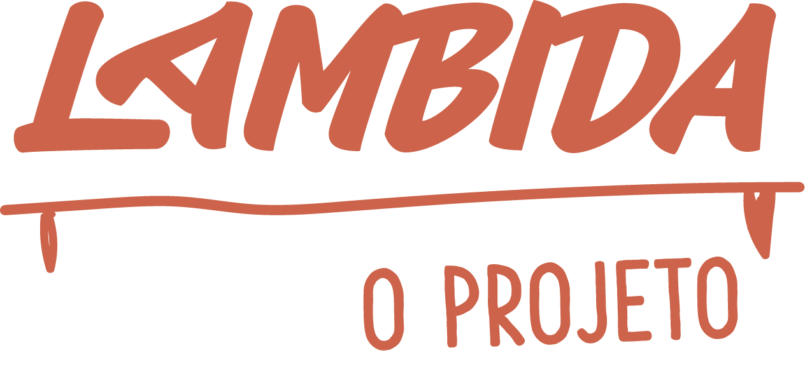
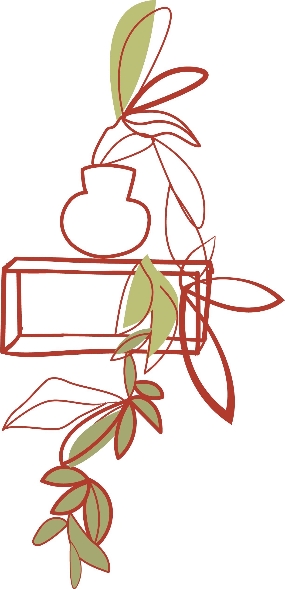

é um projeto de Laís Velloso e Luisa Macedo que deseja pensar a cidade como um espaço de múltiplas narrativas relacionadas à comida, tendo quase sempre as mulheres como protagonistas. Foram registradas Belinha, Lena, Rose, Ruth, Silvia e Vera, moradoras de diversas regionais de BH. Durante o preparo de receitas escolhidas por elas, foram feitos registros em fotografia. Nestas imagens estarão presentes QR CODE'S que, ao serem lidos por quem passa na rua, conduzirão a áudios referentes às narrativas do preparo de cada receita culinária correspondente.